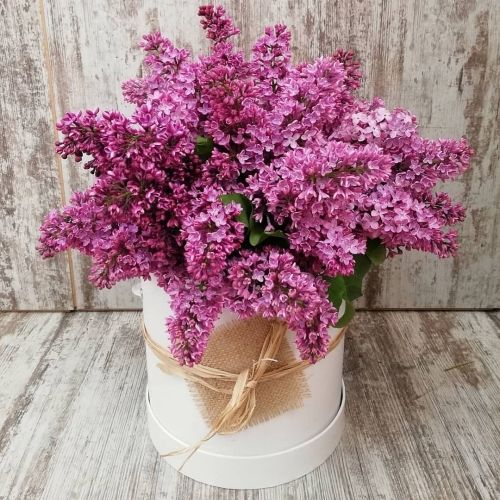
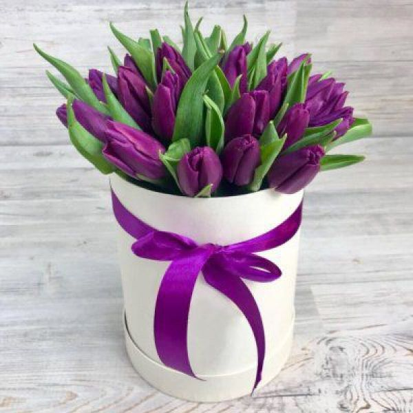

ГЛАДИОЛУСЫ
Букет из гладиолусов означает внезапное озарение, влюбленность с первого взгляда.

ЛАНДЫШИ
Букет из ландышей — символ доверия и покорности.

ПИОНЫ
Букет из пионов символизирует романтику и сулит процветание молодой семье.

ПОДСОЛНУХИ
Букет из цветов подсолнухa означает: достаток, благополучие, успех, жизнелюбие, оптимизм, радость.

РОМАШКИ
Букет из ромашек олицетворяет символ романтичности, юности, недоверчивости, невинности.

РОЗЫ
Букет из роз универсальный вариант для всех случаев, особенно в сочетании с необычными растениями.
- 
СИРЕНЬ
Букет из сирени дарят в знак первой любви.
- 
ТЮЛЬПАН
Букет из сирени символ чистой любви и большого счастья.